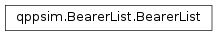

qppsim.BearerList module¶
Documentation¶
Module that provides the model for the List of all bearers in the simulation. The class is static, and the module function ‘get_bearer_list’ provides access to the instance.
-
class
qppsim.BearerList.BearerList[source]¶ Bases:
objectClass that represents the list with all the bearers active in the simulation. Bearers are created in this class, and returned to the requester of the bearer.
Methods are provided for adding a default bearer, adding a dedicated bearer, and deactivating an active bearer.
-
add_dedicated_bearer(ue, queue_size, qci, gbr, mbr, pci, pvi, arp, port)[source]¶ Create a dedicated bearer for the UE, with the QoS parameters received in the call, and the RLC queue size specified. Add the bearer to the bearer list.
-
-
qppsim.BearerList.get_bearer_list()[source]¶ Get a reference to the instance of the BearerList class. If there is none, a new instance is created.
-
qppsim.BearerList.instance= None¶ Reference to the active instance of this class